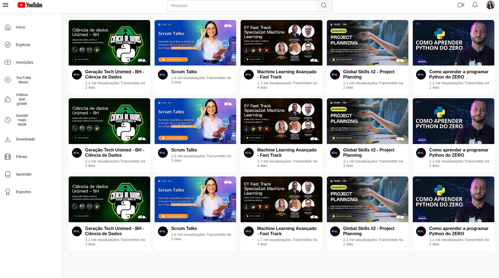

YouTube Clone – Liste de Vidéos & Page de Lecture


Description
Ce projet regroupe deux mini‑projets front‑end : la recréation d’une page de liste de vidéos inspirée de YouTube et la reproduction d’une page de lecture vidéo. L’objectif était de maîtriser le HTML sémantique, le CSS moderne (Grid et Flexbox) et le responsive design à travers une interface fidèle à l’expérience YouTube, entièrement réalisée sans JavaScript.
Informations
- Durée : 2 semaines
- Personnes : Projet individuel
- Type : Projet personnel
Fonctionnalités
- Page de liste de vidéos avec grille responsive en CSS Grid.
- En‑tête avec barre de recherche et icônes utilisateur.
- Menu latéral fixe avec icônes personnalisées.
- Page de lecture vidéo avec lecteur YouTube intégré (iframe).
- Sidebar de recommandations avec miniatures et métadonnées.
- Design entièrement responsive (desktop, tablette, mobile).
- Structure HTML5 sémantique et accessible.
CSS et mise en page
- Utilisation de CSS Grid pour organiser la liste de vidéos.
- Flexbox pour la mise en page de la page de lecture.
- Icônes importées depuis Figma pour un rendu propre.
- Effets au survol et au focus pour une meilleure UX.
- Adaptation automatique de la grille selon la largeur de l’écran.